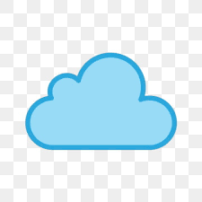
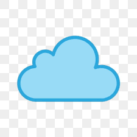

MolenGeek est un écosystème technologique qui rends les technologies accessibles à tous, indépendamment de leur formation académique ou de leur expérience. Cette initiative repose sur trois piliers clés : l’incubateur, les formations en technologies de l’information et les événements inspirants. Les formations offertes par MolenGeek couvrent un large éventail de domaines technologiques, de la programmation informatique à la cybersécurité, en passant par le marketing digital et l’intelligence artificielle. Ces programmes visent à renforcer les compétences des chercheurs d’emploi et à les préparer à des carrières prometteuses dans le secteur technologique. L’incubateur de MolenGeek apporte un soutien concret aux entrepreneurs en herbe en leur fournissant des ressources, des mentors expérimentés et un environnement propice à la croissance de leurs startups. Les événements organisés par MolenGeek, tels que les hackathons, favorisent la créativité, l’innovation et l’apprentissage collaboratif au sein de la communauté technologique. MolenGeek est bien plus qu’un espace de travail partagé, c’est un acteur majeur dans la démocratisation de la technologie, permettant à des individus de tous horizons de développer leurs compétences, de créer des entreprises innovantes et de célébrer leur passion pour la technologie lors d’événements stimulants.
MolenGeek remplit une mission de sensibilisation à l’entrepreneuriat et se trouve au début du parcours de l’entrepreneur. Grâce à MolenGeek, l’entrepreneur pourra découvrir l’entrepreneuriat au travers des événements MolenGeek et pourra également apprendre les langages informatiques afin de programmer son projet au travers de la « Coding School ». Cette école permet à la fois à l’entrepreneur de développer techniquement son projet mais également d’intégrer d’autres projets startups. Enfin, l’espace de coworking MolenGeek va jouer un rôle de tremplin vers les autres organisations et institutions qui soutiennent l’entrepreneuriat et aident les entrepreneurs. Force est de constater qu’aujourd’hui un grand nombre de participants ne se reconnaissent pas ou ne s’identifient pas dans les organisations en place, à cause du jargon employé, de l’atmosphère très entrepreneuriale ou encore par l’utilisation de nouvelles techniques de travail.

 
